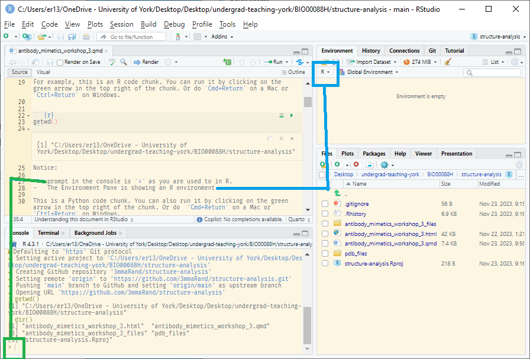
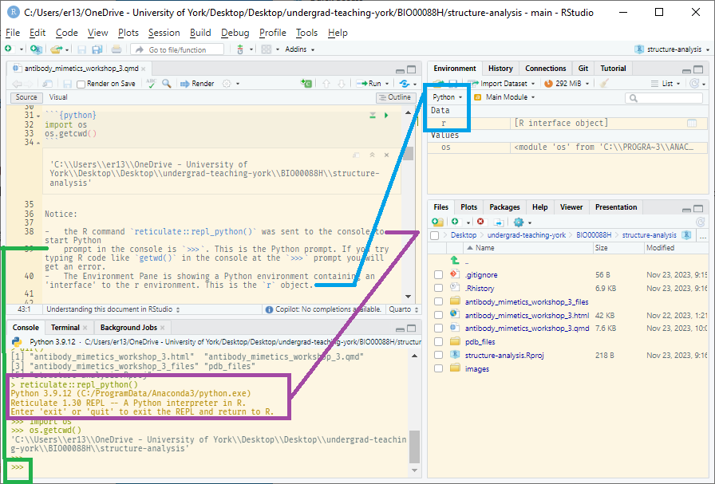
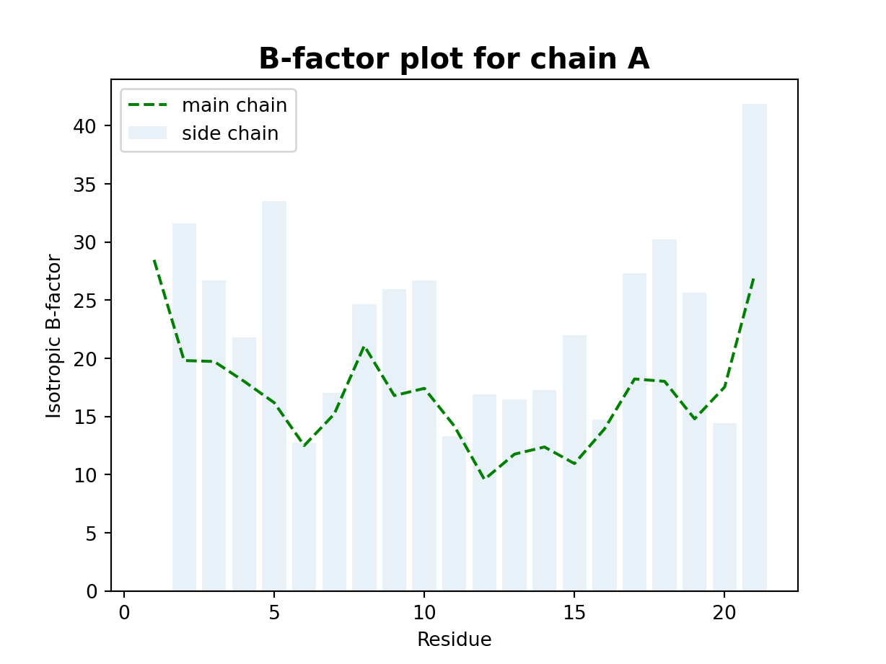
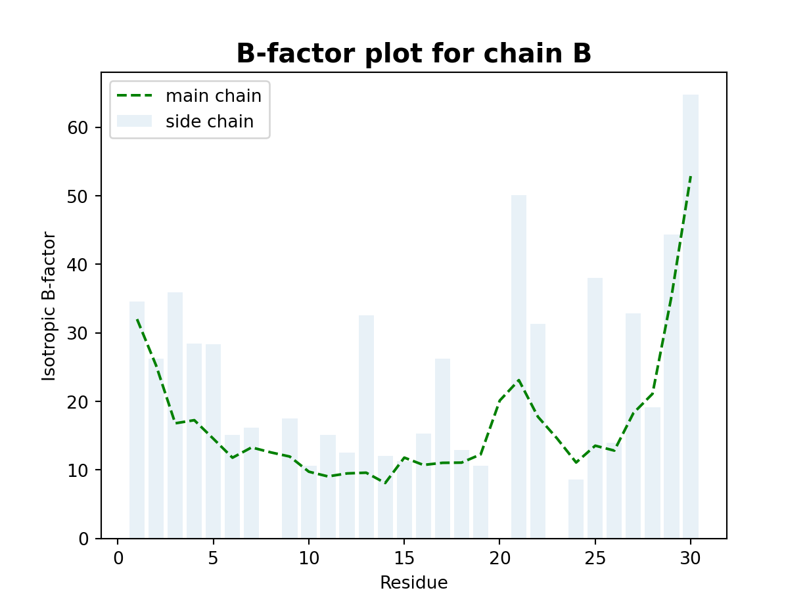
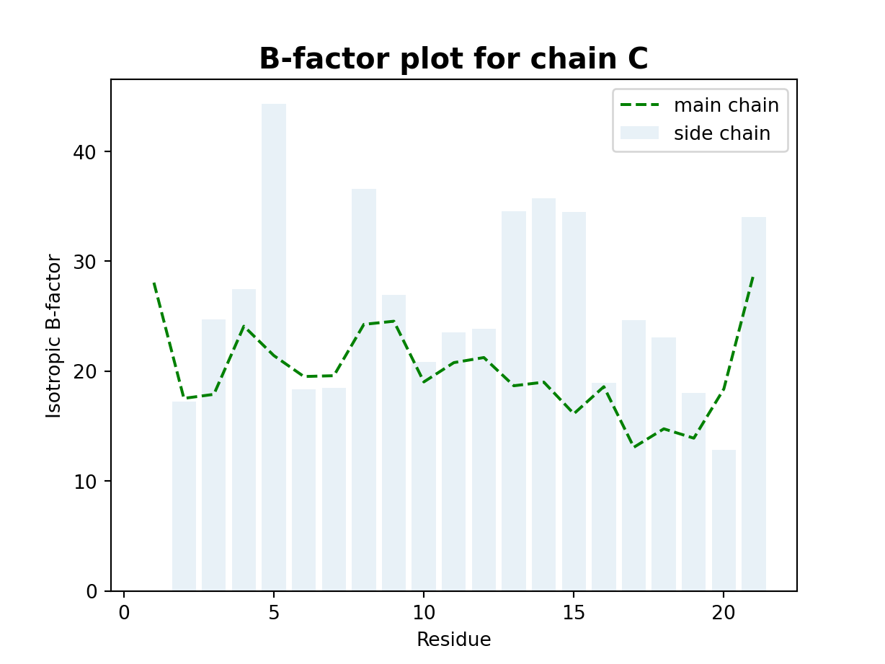
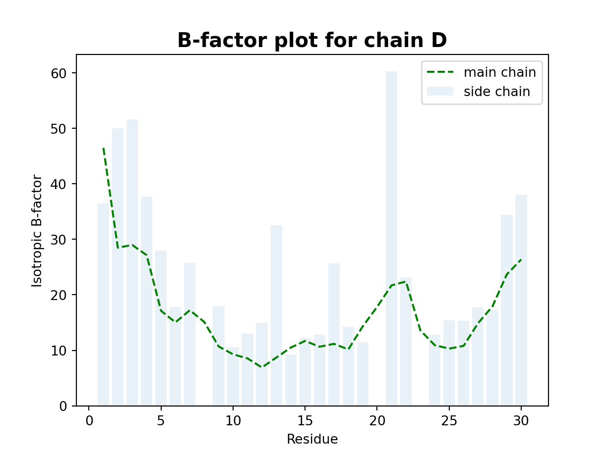
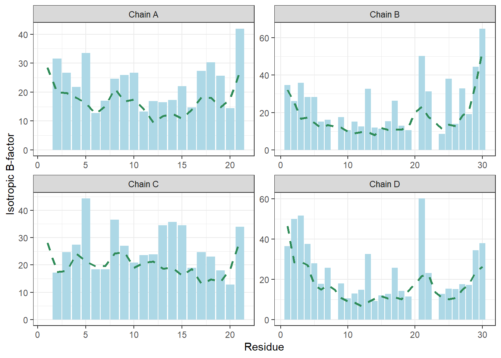
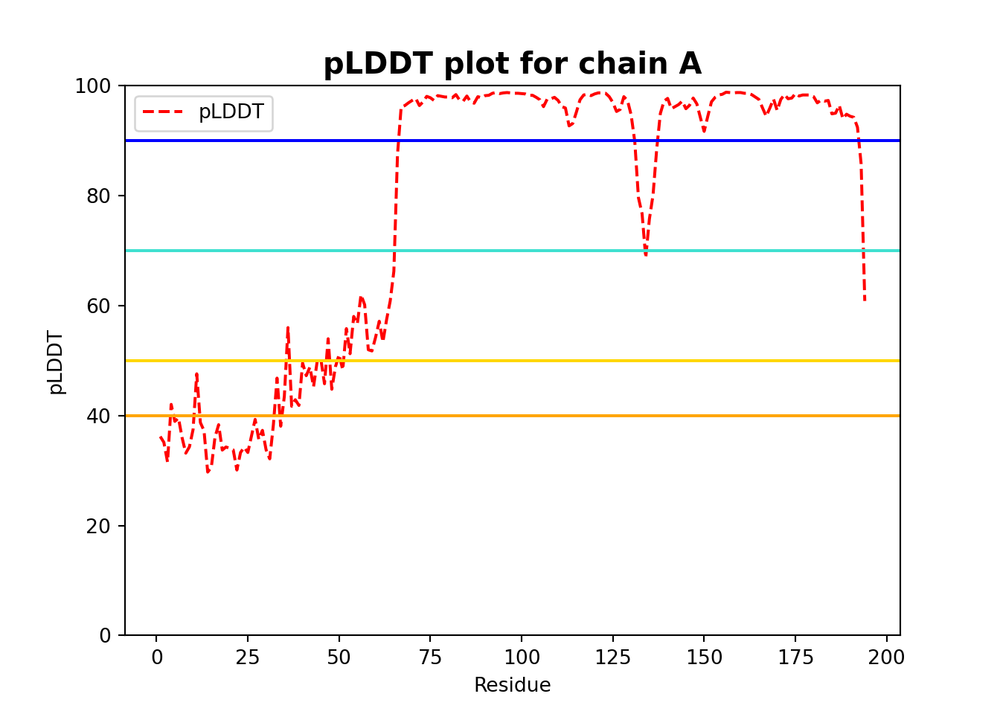
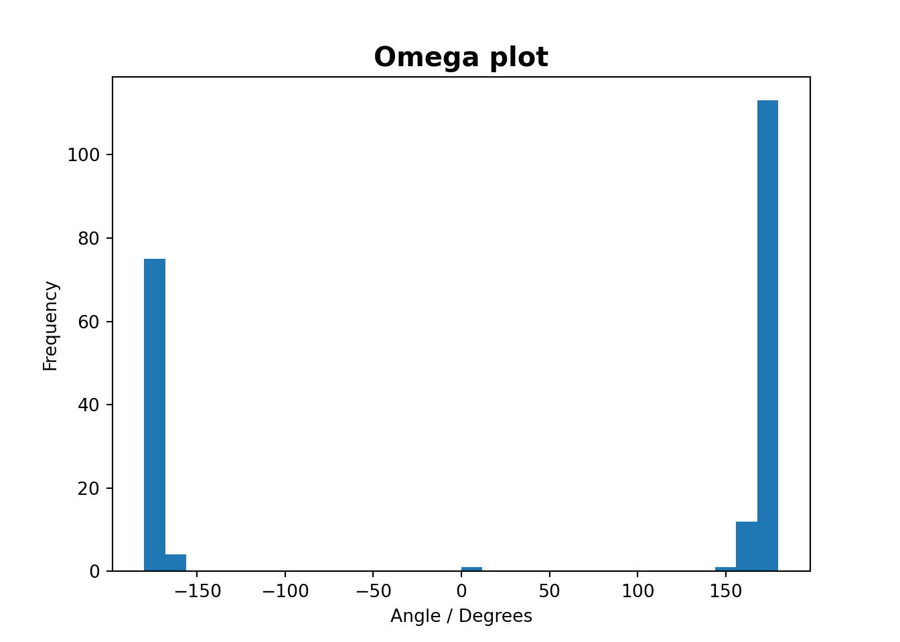
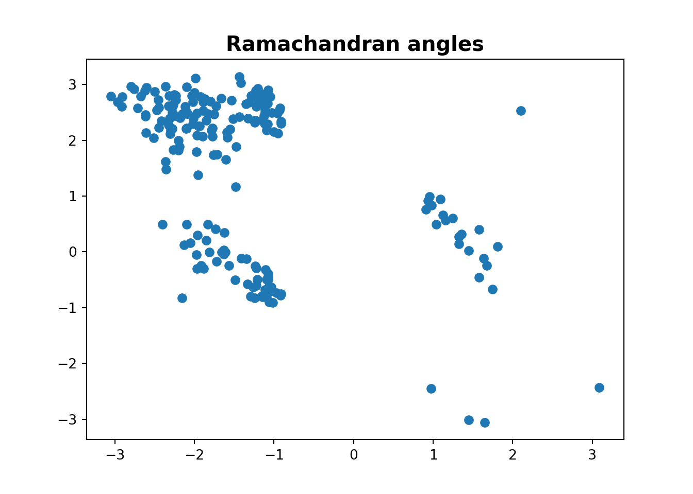

# R chunk
getwd()[1] "C:/Users/emmar/OneDrive - University of York/Desktop/Desktop/undergrad-teaching-york/BIO00088H/structure-analysis"BIO00088H - Group Research Project
You are using RStudio which is an integrated development environment (IDE) initially developed for R. It can now be used for many other languages including Python. Some set up is required which is covered in Structure Data Analysis for Group Project. This in contrast to the Colab notebook which is cloud-based and does not require any set up (except installing packages)
You might find RStudio useful for Python because you are already familiar with it. It is also a very good way to create Quarto documents with code chunks in more than one language. This document is an example of that.
For example, this is an R code chunk. You can run it by clicking on the green arrow in the top right of the chunk. Or do Cmd+Return on a Mac or Ctrl+Return on Windows.
# R chunk
getwd()[1] "C:/Users/emmar/OneDrive - University of York/Desktop/Desktop/undergrad-teaching-york/BIO00088H/structure-analysis"Notice:
> as you are used to in R.
This is a Python code chunk. You can also run it by clicking on the green arrow in the top right of the chunk. Or do Cmd+Return on a Mac or Ctrl+Return on Windows.
# Python chunk
import os
os.getcwd()'C:\\Users\\emmar\\OneDrive - University of York\\Desktop\\Desktop\\undergrad-teaching-york\\BIO00088H\\structure-analysis'Notice:
reticulate::repl_python() was sent to the console to start Python>>>. This is the Python prompt. If you try typing R code like getwd() in the console at the >>> prompt you will get an error.r object.
If you type r.getwd() in the console at the Python prompt you don’t get an error. You get the same result as you did in the R code chunk above
This is because you can access R commands and R objects from your Python environment using the r object. For example, you can access an R vector object an_r_obj from Python using r.an_r_obj.
Run this code to create a vector in R called an_r_obj:
# R chunk
an_r_obj <- c(1, 2, 3)
str(an_r_obj) num [1:3] 1 2 3You’ll see quit is sent to the Python prompt to exit Python and run the R command.
Try to access it from Python:
# Python chunk
an_r_objname 'an_r_obj' is not definedYou get an error because Python does not know about the R object an_r_obj. But you can access it using the r object:
# Python chunk
r.an_r_obj[1.0, 2.0, 3.0]type(r.an_r_obj)<class 'list'>You can ‘copy’ it to your python environment if you want:
# Python chunk
acopy = r.an_r_obj
type(acopy)<class 'list'>acopy is in your Python environment now.
Magic!
Datatypes differ between the languages. Reticulate converts some automatically - for example R vectors to Python lists. For some other datatypes you must explicitly convert.
You can also access Python objects from R using the py object. For example, you can access the Python list object a_python_obj from R using py$a_python_obj. However you do need to have loaded the reticulate package in R first.
# Python chunk
a_python_obj = [4, 5, 6]# R chunk
library(reticulate)# R chunk
py$a_python_obj[1] 4 5 6You access objects in the Python environment from R in an R-like way using py$
You access objects in the R environment from Python in a Python-like way using r.
This RStudio Project already has a folder containing the 4INS.pdb file. I have called the folder pdb_files. Jon called his folder download. When you are doing your own work in RStudio you can make folders by:
mkdir pdb_files in the Terminal ORfs::dir_create("pdb_files") at the R consoleYou can download a pdb by typing curl https://files.rcsb.org/download/4INS.pdb -o pdb_files/4INS.pdb in the Terminal
I have used curl rather than wget because wget because most macOS and Windows do not come with wget by default. They mostly do have the very similar curl. Use is very similar but notice it is a lowercase -o for output rather than a capital -O.
I would tend not to have this “house-keeping” (making folders, downloading through the terminal) in my reproducible document. I would, however, explain the directory structure and where the data files came from in the README.md file. Later we download data using a Python command. I probably would have that in my reproducible document.1
Most of the text explanation here is taken directly from Jon and Michael’s document. I have separated out some bits of code to try to emphasise the structure of the Python code in places. I have added some extensions to make links between Python and R.
# Python chunk
# Import the `gemmi` package
import gemmi4INS is a 1.5 angstroems structure of insulin. We have seen structures of insulin in our first workshop.
You can open the file to view it by clicking on it in the Files Pane.
Here are a few basic but interesting questions about a protein structure we can answer using Python programming:
Import the structure file:
# Python chunk
filename = "pdb_files/4INS.pdb"
structure_file = gemmi.read_structure ( filename ) # remember gemmi.whatever?Extract the first model from the structure object:
model = structure_file[0] # there can be more than one model per structure file!
# in computer science 0 is the first index, so we are
# getting the first (and only) model in the fileYou can see all the attributes and methods available for the model object with:
# Python chunk
dir(model)['__class__', '__delattr__', '__delitem__', '__dir__', '__doc__', '__eq__', '__format__', '__ge__', '__getattribute__', '__getitem__', '__getstate__', '__gt__', '__hash__', '__init__', '__init_subclass__', '__iter__', '__le__', '__len__', '__lt__', '__module__', '__ne__', '__new__', '__reduce__', '__reduce_ex__', '__repr__', '__setattr__', '__sizeof__', '__str__', '__subclasshook__', 'add_chain', 'all', 'calculate_center_of_mass', 'calculate_mass', 'clone', 'count_atom_sites', 'count_hydrogen_sites', 'count_occupancies', 'find_chain', 'find_cra', 'find_last_chain', 'find_residue_group', 'get_all_residue_names', 'get_subchain', 'has_hydrogen', 'name', 'remove_alternative_conformations', 'remove_chain', 'remove_hydrogens', 'remove_ligands_and_waters', 'remove_waters', 'sole_residue', 'split_chains_by_segments', 'subchains', 'transform_pos_and_adp']You can also click on it in the Environment Pane.
One of the methods calculates the molecular weight of the protein:
# Python chunk
print ( "This protein weight is", model.calculate_mass(), "Da" )This protein weight is 15332.740152545452 DaWhich can be formatted to two decimal places:
# Python chunk
print ( "This protein weight is %.2f Da" % model.calculate_mass() )This protein weight is 15332.74 DaEach chain in the model can be accessed by indexing the model object:
# Python chunk
print(model[0])<gemmi.Chain A with 52 res># Python chunk
print(model[1])<gemmi.Chain B with 80 res># Python chunk
print(model[2])<gemmi.Chain C with 28 res># Python chunk
print(model[3])<gemmi.Chain D with 294 res>You can iterate through the chains in the model with a for loop:
# Python chunk
for polymer in model :
print (polymer)<gemmi.Chain A with 52 res>
<gemmi.Chain B with 80 res>
<gemmi.Chain C with 28 res>
<gemmi.Chain D with 294 res>You can iterate through the chains and through the residues in the chain with two nested for loops: (long output)
# Python chunk
for polymer in model :
print (polymer)
for steve in polymer :
print(steve)<gemmi.Chain A with 52 res>
1(GLY)
2(ILE)
3(VAL)
4(GLU)
5(GLN)
6(CYS)
7(CYS)
8(THR)
9(SER)
10(ILE)
11(CYS)
12(SER)
13(LEU)
14(TYR)
15(GLN)
16(LEU)
17(GLU)
18(ASN)
19(TYR)
20(CYS)
21(ASN)
101(HOH)
102(HOH)
103(HOH)
104(HOH)
105(HOH)
106(HOH)
107(HOH)
108(HOH)
109(HOH)
110(HOH)
111(HOH)
112(HOH)
113(HOH)
114(HOH)
115(HOH)
116(HOH)
117(HOH)
118(HOH)
119(HOH)
120(HOH)
121(HOH)
122(HOH)
123(HOH)
124(HOH)
125(HOH)
126(HOH)
127(HOH)
128(HOH)
129(HOH)
130(HOH)
131(HOH)
<gemmi.Chain B with 80 res>
1(PHE)
2(VAL)
3(ASN)
4(GLN)
5(HIS)
6(LEU)
7(CYS)
8(GLY)
9(SER)
10(HIS)
11(LEU)
12(VAL)
13(GLU)
14(ALA)
15(LEU)
16(TYR)
17(LEU)
18(VAL)
19(CYS)
20(GLY)
21(GLU)
22(ARG)
23(GLY)
24(PHE)
25(PHE)
26(TYR)
27(THR)
28(PRO)
29(LYS)
30(ALA)
101(ZN)
201(HOH)
202(HOH)
203(HOH)
204(HOH)
205(HOH)
206(HOH)
207(HOH)
208(HOH)
209(HOH)
210(HOH)
211(HOH)
212(HOH)
213(HOH)
214(HOH)
215(HOH)
216(HOH)
217(HOH)
218(HOH)
219(HOH)
220(HOH)
221(HOH)
222(HOH)
223(HOH)
224(HOH)
225(HOH)
226(HOH)
227(HOH)
228(HOH)
229(HOH)
230(HOH)
231(HOH)
232(HOH)
233(HOH)
234(HOH)
235(HOH)
236(HOH)
237(HOH)
238(HOH)
239(HOH)
240(HOH)
241(HOH)
242(HOH)
243(HOH)
244(HOH)
245(HOH)
246(HOH)
247(HOH)
248(HOH)
249(HOH)
<gemmi.Chain C with 28 res>
1(GLY)
2(ILE)
3(VAL)
4(GLU)
5(GLN)
6(CYS)
7(CYS)
8(THR)
9(SER)
10(ILE)
11(CYS)
12(SER)
13(LEU)
14(TYR)
15(GLN)
16(LEU)
17(GLU)
18(ASN)
19(TYR)
20(CYS)
21(ASN)
101(HOH)
102(HOH)
103(HOH)
104(HOH)
105(HOH)
106(HOH)
107(HOH)
<gemmi.Chain D with 294 res>
1(PHE)
2(VAL)
3(ASN)
4(GLN)
5(HIS)
6(LEU)
7(CYS)
8(GLY)
9(SER)
10(HIS)
11(LEU)
12(VAL)
13(GLU)
14(ALA)
15(LEU)
16(TYR)
17(LEU)
18(VAL)
19(CYS)
20(GLY)
21(GLU)
22(ARG)
23(GLY)
24(PHE)
25(PHE)
26(TYR)
27(THR)
28(PRO)
29(LYS)
30(ALA)
101(ZN)
201(HOH)
202(HOH)
203(HOH)
204(HOH)
205(HOH)
206(HOH)
207(HOH)
208(HOH)
209(HOH)
210(HOH)
211(HOH)
212(HOH)
213(HOH)
214(HOH)
215(HOH)
216(HOH)
217(HOH)
218(HOH)
219(HOH)
220(HOH)
221(HOH)
222(HOH)
223(HOH)
224(HOH)
225(HOH)
226(HOH)
227(HOH)
228(HOH)
229(HOH)
230(HOH)
231(HOH)
232(HOH)
233(HOH)
234(HOH)
235(HOH)
236(HOH)
237(HOH)
238(HOH)
239(HOH)
240(HOH)
241(HOH)
242(HOH)
243(HOH)
244(HOH)
245(HOH)
246(HOH)
247(HOH)
248(HOH)
249(HOH)
250(HOH)
251(HOH)
252(HOH)
253(HOH)
254(HOH)
255(HOH)
256(HOH)
257(HOH)
258(HOH)
259(HOH)
260(HOH)
261(HOH)
262(HOH)
263(HOH)
264(HOH)
265(HOH)
266(HOH)
267(HOH)
268(HOH)
269(HOH)
270(HOH)
271(HOH)
272(HOH)
273(HOH)
274(HOH)
275(HOH)
276(HOH)
277(HOH)
278(HOH)
279(HOH)
280(HOH)
281(HOH)
282(HOH)
283(HOH)
284(HOH)
285(HOH)
286(HOH)
287(HOH)
288(HOH)
289(HOH)
290(HOH)
291(HOH)
292(HOH)
293(HOH)
294(HOH)
295(HOH)
296(HOH)
297(HOH)
298(HOH)
299(HOH)
300(HOH)
301(HOH)
302(HOH)
303(HOH)
304(HOH)
305(HOH)
306(HOH)
307(HOH)
308(HOH)
309(HOH)
310(HOH)
311(HOH)
312(HOH)
313(HOH)
314(HOH)
315(HOH)
316(HOH)
317(HOH)
318(HOH)
319(HOH)
320(HOH)
321(HOH)
322(HOH)
323(HOH)
324(HOH)
325(HOH)
326(HOH)
327(HOH)
328(HOH)
329(HOH)
330(HOH)
331(HOH)
332(HOH)
333(HOH)
334(HOH)
335(HOH)
336(HOH)
337(HOH)
338(HOH)
339(HOH)
340(HOH)
341(HOH)
342(HOH)
343(HOH)
344(HOH)
345(HOH)
346(HOH)
347(HOH)
348(HOH)
349(HOH)
350(HOH)
351(HOH)
352(HOH)
353(HOH)
354(HOH)
355(HOH)
356(HOH)
357(HOH)
358(HOH)
359(HOH)
360(HOH)
361(HOH)
362(HOH)
363(HOH)
364(HOH)
365(HOH)
366(HOH)
367(HOH)
368(HOH)
369(HOH)
370(HOH)
371(HOH)
372(HOH)
373(HOH)
374(HOH)
375(HOH)
376(HOH)
377(HOH)
378(HOH)
379(HOH)
380(HOH)
381(HOH)
382(HOH)
383(HOH)
384(HOH)
385(HOH)
386(HOH)
387(HOH)
388(HOH)
389(HOH)
390(HOH)
391(HOH)
392(HOH)
393(HOH)
394(HOH)
395(HOH)
396(HOH)
397(HOH)
398(HOH)
399(HOH)
400(HOH)
401(HOH)
402(HOH)
403(HOH)
404(HOH)
405(HOH)
406(HOH)
407(HOH)
408(HOH)
409(HOH)
410(HOH)
411(HOH)
412(HOH)
413(HOH)
414(HOH)
415(HOH)
416(HOH)
417(HOH)
418(HOH)
419(HOH)
420(HOH)
421(HOH)
422(HOH)
423(HOH)
424(HOH)
425(HOH)
426(HOH)
427(HOH)
428(HOH)
429(HOH)
430(HOH)
431(HOH)
432(HOH)
433(HOH)
434(HOH)
435(HOH)
436(HOH)
437(HOH)
438(HOH)
439(HOH)
440(HOH)
441(HOH)
442(HOH)
443(HOH)
444(HOH)
445(HOH)
446(HOH)
447(HOH)
448(HOH)
449(HOH)
450(HOH)
451(HOH)
452(HOH)
453(HOH)
454(HOH)
455(HOH)
456(HOH)
457(HOH)
458(HOH)
459(HOH)
460(HOH)
461(HOH)
462(HOH)
463(HOH)A major difference between R and Python is that R uses various braces to indicate blocks of code and indentation makes the code easier to follow. In Python the indentation is not just for readability, it is part of the syntax. It is the indentation itself which indicates the blocks of code.
You can use two nested loops to iterate through the chains and residues and print the chain name and the one letter code for the amino acid:
# Python chunk
for polymer in model :
sequence = ""
print (polymer)
for steve in polymer :
sequence += gemmi.find_tabulated_residue(steve.name).one_letter_code.upper()
print ("Polymer %s: %s" % (polymer.name,sequence))<gemmi.Chain A with 52 res>
Polymer A: GIVEQCCTSICSLYQLENYCN
<gemmi.Chain B with 80 res>
Polymer B: FVNQHLCGSHLVEALYLVCGERGFFYTPKA
<gemmi.Chain C with 28 res>
Polymer C: GIVEQCCTSICSLYQLENYCN
<gemmi.Chain D with 294 res>
Polymer D: FVNQHLCGSHLVEALYLVCGERGFFYTPKA The += operator is a short-hand way of writing sequence = sequence + gemmi.find_tabulated_residue(steve.name).one_letter_code.upper(). It is a common operator in many programming languages. It grows the string sequence by adding the one letter code for the amino acid each time the inner loops executes.
We are going to use our new skills for calculating average B-factors for this structure. We will make a crude separation between protein and waters, and we will introduce another loop to go through every atom in every residue. We will rely on the fact that the find_tabulated_residue() function does not return a code for monomers/residues that are not amino acids. In that case, we will be using residue.name to check if the monomer we are checking is a water molecule.
# Python chunk
aminoacid_bfactors = [ ] # these are lists where we are going to store the
rest_bfactors = [ ] # individual B-factors
for chain in model :
for monomer in chain : # we'll call it monomer this time (name doesn't matter)
for atom in monomer :
if gemmi.find_tabulated_residue(monomer.name).is_amino_acid() :
aminoacid_bfactors.append ( atom.b_iso )
else :
rest_bfactors.append ( atom.b_iso )Hopefully the code is more or less self-explanatory. The key bit in this new part is that we have used the is_amino_acid() function to check what type of monomer we’re encountering at each step. You might wonder, how do we come up with all those suggestions for wonderful functions that do exactly what we need? Well, have a look at the docs for the gemmi module.
We can now calculate the mean and standard deviation of the B-factors for the protein and the rest of the atoms using Python:
# Python chunk
import statistics # we will need to do stats, so we import the module
print ( "Protein part mean(stdev) : %.2f (%.2f)" % \
( statistics.mean ( aminoacid_bfactors ), statistics.stdev ( aminoacid_bfactors ) ))Protein part mean(stdev) : 21.45 (12.39)print ( "Rest of atoms mean(stdev): %.2f (%.2f)" % \
( statistics.mean ( rest_bfactors ), statistics.stdev ( rest_bfactors ) ))Rest of atoms mean(stdev): 52.02 (16.73)You can access the lists from R by using the py$ operator and assign them to vectors:
# R chunk
aminoacid_bf <- py$aminoacid_bfactors
rest_bf <- py$rest_bfactorsAnd calculate the mean and standard deviation in R:
# R chunk
mean(aminoacid_bf) |> round(2)[1] 21.45sd(aminoacid_bf) |> round(2)[1] 12.39mean(rest_bf) |> round(2)[1] 52.02sd(rest_bf) |> round(2)[1] 16.73At this point you might be starting to want to wonder how to relate the notion of ‘Class’ to the names we have been using here so far. We will try to explain this as easy as possible.
We define a variable just by naming it, for example aminoacid_bfactors is a list because we have assigned [ ] – an empty list – to it in aminoacid_bfactors = [ ].
Other variables are assigned whatever functions return, such as structure_file = gemmi.read_structure ( filename ) earlier in the notebook. gemmi.read_structure() returns a Structure class, as it says on the documentation for that function.
Once you’ve got a variable of the Structure class, you can start invoking the functions that come with it.
🔨 Have a deep dive into the docs, see what functions are available and think about potential uses for them. Discuss those ideas with your neighbours and tell us about them! 😃
# Python chunk
# we do not need to import gemmi or statistics again because the notebook
# remembers the previous block where we have imported the module and
# read the structure file
from matplotlib import pyplot as plt
for chain in model :
main_chain_bfactors = [ ] # we will store per residue averages here
side_chain_bfactors = [ ]
residue_numbers = [ ] # residue 1 could be reside 42 according to UniProt
for monomer in chain : # we'll call it monomer this time (name doesn't matter)
monomer_main_bfactor = [ ] # one for main-chains, one for side-chains
monomer_side_bfactor = [ ]
if gemmi.find_tabulated_residue(monomer.name).is_amino_acid() :
# we only want per-residue information on amino acids
residue_numbers.append ( int(monomer.seqid.num) )
for atom in monomer : # EDIT HERE! You can find the answers with Moorhen.
if ( atom.name == "CA" or atom.name == "C" or
atom.name == "N" or atom.name == "O" ) :
monomer_main_bfactor.append ( atom.b_iso ) # clue: main chain atoms
else :
monomer_side_bfactor.append ( atom.b_iso )
main_chain_bfactors.append ( statistics.mean ( monomer_main_bfactor ) )
if len ( monomer_side_bfactor ) > 0 :
side_chain_bfactors.append ( statistics.mean ( monomer_side_bfactor ) )
else :
side_chain_bfactors.append ( 0.0 ) # special case for glycine
plt.title ("\nB-factor plot for chain " + chain.name,
fontsize = 15,
fontweight = "bold" )
plt.plot ( residue_numbers, main_chain_bfactors, "g--", label="main chain")
plt.bar ( residue_numbers, side_chain_bfactors, alpha=0.1, label="side chain" )
plt.xlabel ( "Residue" )
plt.ylabel ( "Isotropic B-factor" )
plt.ylim ( 0.0 )
plt.legend ( )
plt.show ( )
print ("\n\n")



The code above looks complicated, but it’s just an extension of what we had done previously, plus a bit of code at the end for plotting the B-factors. This last bit of code uses matplotlib, which is great for producing graphs in Python. You could tweak these plots to no end!
🔨 Customise the look of your B-factor plots using thisreally good Colab notebook on the use of matplotlib as a reference. If you get stuck, ask one of us for help 🙂
💡 One potential improvement of these plots would be to draw a horizontal line where the Wilson B is. You can find out its value on the PDB validation report, and you will learn how to draw horizontal lines in the next example anyway.
Get the data using Python.
This requires a change to loop structure to store the data for all chains in lists. In the Python code the plotting is done inside the loop, so that the data structures only contain the data from the last chain. We want all the data for all chains, so we need to move list initialisation outside the loop.
# Python chunk
main_chain_bfactors = [ ] # we will store per residue averages here
side_chain_bfactors = [ ]
residue_numbers = [ ] # residue 1 could be reside 42 according to UniProt
chain_names = [ ]
for chain in model :
for monomer in chain : # we'll call it monomer this time (name doesn't matter)
monomer_main_bfactor = [ ] # one for main-chains, one for side-chains
monomer_side_bfactor = [ ]
if gemmi.find_tabulated_residue(monomer.name).is_amino_acid() :
# we only want per-residue information on amino acids
residue_numbers.append ( int(monomer.seqid.num) )
chain_names.append ( chain.name )
for atom in monomer : # EDIT HERE! You can find the answers with Moorhen.
if ( atom.name == "CA" or atom.name == "C" or
atom.name == "N" or atom.name == "O" ) :
monomer_main_bfactor.append ( atom.b_iso ) # clue: main chain atoms
else :
monomer_side_bfactor.append ( atom.b_iso )
main_chain_bfactors.append ( statistics.mean ( monomer_main_bfactor ) )
if len ( monomer_side_bfactor ) > 0 :
side_chain_bfactors.append ( statistics.mean ( monomer_side_bfactor ) )
else :
side_chain_bfactors.append ( 0.0 ) # special case for glycineCopy the Python list objects into an R dataframe
# R chunk
data <- data.frame(main_chain_bfactors = py$main_chain_bfactors,
side_chain_bfactors = py$side_chain_bfactors,
residue_numbers = py$residue_numbers,
chain_names = paste("Chain", py$chain_names))Plot with ggplot
# R chunk
library(ggplot2)
ggplot(data) +
geom_col(aes(x = residue_numbers,
y = side_chain_bfactors),
fill = "lightblue" ) +
geom_line(aes(x = residue_numbers,
y = main_chain_bfactors),
color = "seagreen",
linetype = "dashed", linewidth = 1) +
facet_wrap(~chain_names, ncol = 2, scales = "free") +
scale_x_continuous(name = "Residue") +
scale_y_continuous(name = "Isotropic B-factor") +
theme_bw()
And on the subject of customisation, it would be great if we could do the same for AlphaFold models. We know that AlphaFold stores its pLDDT in the B-factor column, so perhaps it’s doable with very little effort?
🔨 Run the following code to get a nice plot for an AlphaFold prediction for human Lysozyme (UniProt ID A0A080YUZ9). This time we will be getting an AlphaFold model from the database, and we will use Python’s wget module for that. We used the wget command at the start of the workshop (scroll up and have a look) and now we are going to demonstrate how we can use it directly from Python. But before that, we need to install it using dear old pip
# Python chunk
# we do not need to import gemmi or statistics again because the notebook
# remembers the previous block where we have imported the module and
# read the structure file
from matplotlib import pyplot as plt # need to create a new plot
import wget
filename = wget.download("https://alphafold.ebi.ac.uk/files/AF-A0A080YUZ9-F1-model_v4.pdb", "pdb_files")
structure_file = gemmi.read_structure ( filename )
model = structure_file[0]
for chain in model : # just one chain with non-multimer AlphaFold
plddts = [ ] # we will store per residue pLDDT here
residue_numbers = [ ]
for monomer in chain :
residue_numbers.append ( int(monomer.seqid.num) )
plddts.append (monomer[0].b_iso) # we just need to get the first atom's pLDDT
plt.title ("\npLDDT plot for chain " + chain.name,
fontsize = 15,
fontweight = "bold" )
plt.plot ( residue_numbers, plddts, "r--", label="pLDDT")
plt.xlabel ( "Residue" )
plt.ylabel ( "pLDDT" )
plt.ylim ( 0.0, 100.0 )(0.0, 100.0)plt.axhline(y=90.0, color="blue")
plt.axhline(y=70.0, color="turquoise")
plt.axhline(y=50.0, color="gold")
plt.axhline(y=40.0, color="orange")
plt.legend ( )
plt.show ( )
The code is actually simpler than what we had for the main and side chain B-factor averages. This time we only care about per residue numbers. We have added a number of horizontal lines coloured according to the AlphaFold database entry so you can see where pLDDT gets too dodgy.
🔨 Go to the AlphaFold database entry page and compare your results with the available graphics, including the Predicted Aligned Error (PAE). What is going on with the N-terminus? Discuss.
💡 Remember what we said about AlphaFold not doing post-translational modifications? That includes the ever-present disulphide bonds. The structure we are looking at is a Lysozyme, which as you will remember from past workshops, relies on disulphide bonds to form the final fold. Wouldn’t it be great if we could check if, despite not being formally linked in the PDB/mmCIF file, the cysteines in this AlphaFold model are consistent with the presence of disulphide bonds?
Here is some new code that checks for that.
🔨 You’ll have to complete it though!
# Python chunk
# we do not need to import gemmi or statistics again because the notebook
# remembers the previous block where we have imported the module and
# read the structure file
distance = 3.0 # change for a sensible value!
for chain in model : # just one chain with non-multimer AlphaFold
neighbour_search = gemmi.NeighborSearch ( model,
structure_file.cell,
distance ).populate ( include_h=False )
cysteines = gemmi.Selection ( '(CYS)' ) # fill in the three-letter code for cysteine!
for model in cysteines.models(structure_file) :
for chain in cysteines.chains(model) :
for residue in cysteines.residues(chain) :
print ("Checking " + residue.name + " %i" % residue.seqid.num )
marks = neighbour_search.find_neighbors ( residue.sole_atom("SG"), # name of sulphur atom in cysteine
0, distance )
for mark in marks :
cra = mark.to_cra ( model )
if cra.residue.seqid.num != residue.seqid.num :
print ( "Potential disulphide bond found: " + cra.residue.name,
" %i" % cra.residue.seqid.num, " to " + residue.name +
" %i" % residue.seqid.num )Checking CYS 8
Checking CYS 40
Checking CYS 58
Checking CYS 71
Potential disulphide bond found: CYS 191 to CYS 71
Checking CYS 95
Potential disulphide bond found: CYS 179 to CYS 95
Checking CYS 129
Potential disulphide bond found: CYS 144 to CYS 129
Checking CYS 140
Potential disulphide bond found: CYS 158 to CYS 140
Checking CYS 144
Potential disulphide bond found: CYS 129 to CYS 144
Checking CYS 158
Potential disulphide bond found: CYS 140 to CYS 158
Checking CYS 179
Potential disulphide bond found: CYS 95 to CYS 179
Checking CYS 191
Potential disulphide bond found: CYS 71 to CYS 191In this bit of code we are finding cysteines in a protein’s sequence with gemmi.Selection(), then searching for neighbours within a cut-off distance (your pick) from the position of their sulphur atoms (which you’ll need to identify using Moorhen or other tools), and then reporting the ones that don’t include atoms from the original cysteine, as the search is atom-based.
🔨 Check that your code does what it’s supposed to be doing. Use Moorhen to download A0A080YUZ9 and go to the positions reported by your code, check that the cysteines are within sensible bonding distance and in the expected orientation.
💡 You probably have spotted that the code reports every potential pair of cysteines twice. That’s one thing you could try to address if you were looking to improve this code!
Here is one more bit of code for you to play with if you have finished all the previous steps and still want to learn more. We will calculate the three torsion angles involved in the formation of the protein backbone for a high resolution crystallographic structure – a monomer of thaumatin at 0.9 angstroems – plotting omega (should be close to planar) and phi,psi (ramachandran angles) separately.
🔨 Lots to customise on these plots: from the appearance of the data to what numbers are represented, all up to you to improve.
# Python chunk
# we do not need to import gemmi or statistics again because the notebook
# remembers the previous block where we have imported the module and
# read the structure file
from matplotlib import pyplot as plt # need to create a new plot
from math import degrees, isnan
import wget
import numpy as np
filename = wget.download("https://files.rcsb.org/download/5X9L.pdb", "pdb_files")
structure_file = gemmi.read_structure ( filename )
model = structure_file[0]
residue_numbers = [ ]
omega_angles = [ ]
phi_angles = [ ]
psi_angles = [ ]
for chain in model :
for residue in chain :
next_res = chain.next_residue ( residue )
prev_res = chain.previous_residue ( residue )
if next_res:
omega = gemmi.calculate_omega(residue, next_res)
if not isnan(degrees(omega)):
omega_angles.append ( degrees ( omega ) )
residue_numbers.append ( residue.seqid.num )
phi, psi = gemmi.calculate_phi_psi ( prev_res, residue, next_res )
phi_angles.append ( phi )
psi_angles.append ( psi )
plt.title ("\nOmega plot",
fontsize = 15,
fontweight = "bold" )
# counts, bins = np.histogram ( omega_angles )
# plt.stairs ( counts, bins )
plt.hist(omega_angles, bins=30)
plt.xlabel("Angle / Degrees")
plt.ylabel("Frequency")
plt.show ( )
print("\n\n")plt.title ("\nRamachandran angles",
fontsize = 15,
fontweight = "bold" )
plt.scatter ( phi_angles, psi_angles )
plt.show ( )
# Python chunk
import session_info
session_info.show()-----
gemmi 0.6.3
matplotlib 3.8.2
numpy 1.26.2
session_info 1.0.0
wget 3.2
-----
Python 3.12.0 (tags/v3.12.0:0fb18b0, Oct 2 2023, 13:03:39) [MSC v.1935 64 bit (AMD64)]
Windows-11-10.0.22621-SP0
-----
Session information updated at 2023-11-25 13:01# R chunk
devtools::session_info()─ Session info ───────────────────────────────────────────────────────────────
setting value
version R version 4.3.1 (2023-06-16 ucrt)
os Windows 11 x64 (build 22621)
system x86_64, mingw32
ui RTerm
language (EN)
collate English_United Kingdom.utf8
ctype English_United Kingdom.utf8
tz Europe/London
date 2023-11-25
pandoc 3.1.1 @ C:/Program Files/RStudio/resources/app/bin/quarto/bin/tools/ (via rmarkdown)
─ Packages ───────────────────────────────────────────────────────────────────
package * version date (UTC) lib source
cachem 1.0.8 2023-05-01 [1] CRAN (R 4.3.1)
callr 3.7.3 2022-11-02 [1] CRAN (R 4.3.1)
cli 3.6.1 2023-03-23 [1] CRAN (R 4.3.1)
colorspace 2.1-0 2023-01-23 [1] CRAN (R 4.3.1)
crayon 1.5.2 2022-09-29 [1] CRAN (R 4.3.1)
devtools 2.4.5 2022-10-11 [1] CRAN (R 4.3.1)
digest 0.6.33 2023-07-07 [1] CRAN (R 4.3.1)
dplyr 1.1.3 2023-09-03 [1] CRAN (R 4.3.1)
ellipsis 0.3.2 2021-04-29 [1] CRAN (R 4.3.1)
evaluate 0.22 2023-09-29 [1] CRAN (R 4.3.1)
fansi 1.0.5 2023-10-08 [1] CRAN (R 4.3.1)
farver 2.1.1 2022-07-06 [1] CRAN (R 4.3.1)
fastmap 1.1.1 2023-02-24 [1] CRAN (R 4.3.1)
fs 1.6.3 2023-07-20 [1] CRAN (R 4.3.1)
generics 0.1.3 2022-07-05 [1] CRAN (R 4.3.1)
ggplot2 * 3.4.4 2023-10-12 [1] CRAN (R 4.3.1)
glue 1.6.2 2022-02-24 [1] CRAN (R 4.3.1)
gtable 0.3.4 2023-08-21 [1] CRAN (R 4.3.1)
here 1.0.1 2020-12-13 [1] CRAN (R 4.3.1)
htmltools 0.5.6.1 2023-10-06 [1] CRAN (R 4.3.1)
htmlwidgets 1.6.2 2023-03-17 [1] CRAN (R 4.3.1)
httpuv 1.6.11 2023-05-11 [1] CRAN (R 4.3.1)
jsonlite 1.8.7 2023-06-29 [1] CRAN (R 4.3.1)
knitr 1.44 2023-09-11 [1] CRAN (R 4.3.1)
labeling 0.4.3 2023-08-29 [1] CRAN (R 4.3.1)
later 1.3.1 2023-05-02 [1] CRAN (R 4.3.1)
lattice 0.21-8 2023-04-05 [2] CRAN (R 4.3.1)
lifecycle 1.0.3 2022-10-07 [1] CRAN (R 4.3.1)
magrittr 2.0.3 2022-03-30 [1] CRAN (R 4.3.1)
Matrix 1.5-4.1 2023-05-18 [2] CRAN (R 4.3.1)
memoise 2.0.1 2021-11-26 [1] CRAN (R 4.3.1)
mime 0.12 2021-09-28 [1] CRAN (R 4.3.0)
miniUI 0.1.1.1 2018-05-18 [1] CRAN (R 4.3.1)
munsell 0.5.0 2018-06-12 [1] CRAN (R 4.3.1)
pillar 1.9.0 2023-03-22 [1] CRAN (R 4.3.1)
pkgbuild 1.4.2 2023-06-26 [1] CRAN (R 4.3.1)
pkgconfig 2.0.3 2019-09-22 [1] CRAN (R 4.3.1)
pkgload 1.3.3 2023-09-22 [1] CRAN (R 4.3.1)
png 0.1-8 2022-11-29 [1] CRAN (R 4.3.0)
prettyunits 1.2.0 2023-09-24 [1] CRAN (R 4.3.1)
processx 3.8.2 2023-06-30 [1] CRAN (R 4.3.1)
profvis 0.3.8 2023-05-02 [1] CRAN (R 4.3.1)
promises 1.2.1 2023-08-10 [1] CRAN (R 4.3.1)
ps 1.7.5 2023-04-18 [1] CRAN (R 4.3.1)
purrr 1.0.2 2023-08-10 [1] CRAN (R 4.3.1)
R6 2.5.1 2021-08-19 [1] CRAN (R 4.3.1)
Rcpp 1.0.11 2023-07-06 [1] CRAN (R 4.3.1)
remotes 2.4.2.1 2023-07-18 [1] CRAN (R 4.3.1)
reticulate * 1.34.0 2023-10-12 [1] CRAN (R 4.3.1)
rlang 1.1.1 2023-04-28 [1] CRAN (R 4.3.1)
rmarkdown 2.25 2023-09-18 [1] CRAN (R 4.3.1)
rprojroot 2.0.3 2022-04-02 [1] CRAN (R 4.3.1)
rstudioapi 0.15.0 2023-07-07 [1] CRAN (R 4.3.1)
scales 1.2.1 2022-08-20 [1] CRAN (R 4.3.1)
sessioninfo 1.2.2 2021-12-06 [1] CRAN (R 4.3.1)
shiny 1.7.5.1 2023-10-14 [1] CRAN (R 4.3.1)
stringi 1.7.12 2023-01-11 [1] CRAN (R 4.3.0)
stringr 1.5.0 2022-12-02 [1] CRAN (R 4.3.1)
tibble 3.2.1 2023-03-20 [1] CRAN (R 4.3.1)
tidyselect 1.2.0 2022-10-10 [1] CRAN (R 4.3.1)
urlchecker 1.0.1 2021-11-30 [1] CRAN (R 4.3.1)
usethis 2.2.2 2023-07-06 [1] CRAN (R 4.3.1)
utf8 1.2.3 2023-01-31 [1] CRAN (R 4.3.1)
vctrs 0.6.4 2023-10-12 [1] CRAN (R 4.3.1)
withr 2.5.1 2023-09-26 [1] CRAN (R 4.3.1)
xfun 0.40 2023-08-09 [1] CRAN (R 4.3.1)
xtable 1.8-4 2019-04-21 [1] CRAN (R 4.3.1)
yaml 2.3.7 2023-01-23 [1] CRAN (R 4.3.0)
[1] C:/Users/emmar/AppData/Local/R/win-library/4.3
[2] C:/Program Files/R/R-4.3.1/library
─ Python configuration ───────────────────────────────────────────────────────
python: C:/Program Files/Python312/python.exe
libpython: C:/Program Files/Python312/python312.dll
pythonhome: C:/Program Files/Python312
version: 3.12.0 (tags/v3.12.0:0fb18b0, Oct 2 2023, 13:03:39) [MSC v.1935 64 bit (AMD64)]
Architecture: 64bit
numpy: C:/Users/emmar/AppData/Roaming/Python/Python312/site-packages/numpy
numpy_version: 1.26.2
NOTE: Python version was forced by RETICULATE_PYTHON_FALLBACK
──────────────────────────────────────────────────────────────────────────────